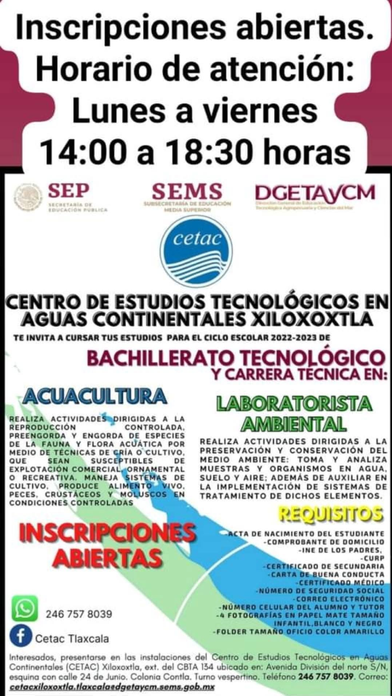

CETAC
Centro de Estudios Tecnológicos en Aguas Continentales
Especializado en proyectos relacionados con recursos hídricos y ecosistemas acuáticos de la región.
Sobre CETAC
El Centro de Estudios Tecnológicos en Aguas Continentales (CETAC) es una extensión del CBTa 134 ubicada en las instalaciones de la Telesecundaria "Lic. Benito Juárez" en Santa Isabel Xiloxoxtla, Tlaxcala.
Ofrece Bachillerato Tecnológico con especialidades técnicas enfocadas en el manejo y conservación de recursos hídricos y ecosistemas acuáticos de la región.
📍 Ubicación
Av. División del Norte S/N, esq. 24 de Junio, Colonia Contla
Santa Isabel Xiloxoxtla, Tlaxcala
🎓 Carreras Técnicas
📞 Contacto
Teléfono: 246 757 8039
Horario: Lunes a Viernes, 14:00 a 18:30 hrs
Turno: Vespertino

Proyecto PAEC de CETAC
Contribuyendo a la conservación del medio ambiente
Colecta de PET para la Conservación del Medio Ambiente
Los estudiantes de CETAC participan activamente en la recolección de botellas de PET como parte del compromiso institucional con la preservación ambiental.
- Recolección y clasificación de residuos PET
- Concientización ambiental en la comunidad
- Fomento de la cultura del reciclaje
- Reducción de contaminación en ecosistemas locales

Conoce otras sedes
Explora las demás escuelas del Programa PAEC